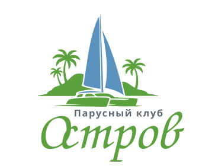

Единый набор фирменного знака парусного клуба. Все файлы — векторные SVG со встроенными шрифтами (рукописный «Остров» + Montserrat), поэтому отображаются одинаково в любом окружении. Полный логотип — для основного использования, знак — для тесных мест и иконок.

| Сценарий | Файл | Почему |
|---|---|---|
| Шапка сайта (белый фон) | ostrov-logo-color.svg | основной фирменный вид |
| Подвал, hero, тёмные секции | ostrov-logo-white.svg | читается на тёмном/фото |
| Печать, ч/б, водяной знак, штамп | ostrov-logo-mono.svg | один цвет через CSS color |
| Фавикон, аватар, превью в соцсетях | ostrov-mark-color.svg | знак читается в малом размере |
| Иконка на тёмном фоне | ostrov-mark-white.svg | выворотка знака |
| Кнопки, бейджи, акценты | ostrov-mark-mono.svg | наследует цвет родителя |
#5B92BD#5BA13D#5f6c78#0e2f46Одноцветные файлы используют fill="currentColor".
Если вставить SVG инлайн или задать ему CSS color, логотип примет нужный оттенок —
один файл закрывает все одноцветные сценарии.
{kind=link}
{kind=link}
{kind=link}
{kind=link}
{kind=link}
{kind=link}